Image Effects¶
Pinta offers a wide range of effects that can be applied to images or selected areas of an image.
- Glow: Overlays an illuminating glow as if the image were strongly backlit
- Sharpen: Sharpens the image by removing softness
- Soften Portrait: Makes the portrait lighting appear more diffused
- Blur: Makes the image appear blurred
- Distort: Warps, twists, transforms or convolutes an image.
- Artistic Medium: Makes the image appear as if it were painted or sketched
- Render: Renders clouds or fractals
- Stylize: Changes the image based on edge detection
All of the effects can be found in the effects menu:

To illustrate all of the effects we will be using this photo of KFC.

Glow:¶
To open the Glow effect go to Effects>Photo Effects>Glow

The Glow effect is used to give images an inner glow by brightening lighter tones and muting color saturation, making the image appear as though it were strongly back-lit. A dialogue box populates with three sliders, radius, brightness, and contrast.

The Radius slider controls the strength of the effect. Higher values yield stronger results.
- Drag slider to the right to increase effect strength
- Drag slider to the left to decrease effect strength
The Brightness slider controls the intensity of the illumination. Higher values yield brighter images, lower values yield darker images.
- Drag slider to the right to increase brightness
- Drag slider to the left to decrease brightness
The Contrast slider controls the color range, making an image appear more vivid or dull. Higher contract values yield more vibrant tones and lower values yield duller tones.
- Drag slider to the right to increase contrast
- Drag slider to the left to decrease contrast
Sharpen:¶
To open the Sharpen effect go to Effects>Photo Effects>Sharpen

The Sharpen effect is used to reduce softness and emphasize texture in an image to draw in viewer focus. A dialogue box populates with a strength slider. The strength slider controls how pronounced the edges in an image appear, increasing the contrast of edges.
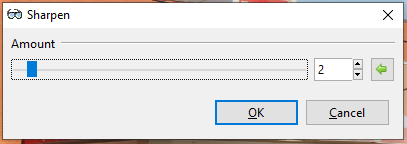
- Drag slider to the right to increase sharpness
- Drag slider to the left to decrease sharpness
Soften Portrait:¶
To open the Soften Portrait effect go to Effects>Photo Effects>Soften Portrait
The Soften Portrait effect is used to soften images as if the lighting were diffused, adding a subtle glow. A dialogue box populates with three sliders, softness, lighting, and warmth.

The Softness slider controls the strength of the effect. Higher values yield a softer, more blurred image.
- Drag slider to the right to increase softness
- Drag slider to the left to decrease softness
The Lighting slider controls the strength of the illumination. Higher values yield stronger lighting and brighter images.
- Drag slider to the right to increase lighting
- Drag slider to the left to decrease lighting
The Warmth slider controls the color of the lighting. Higher values yield more warmth, making tones appear more golden. Lower values yield more coolness, making tones appear bluer.
- Drag slider to the right to increase warmth
- Drag slider to the left to decrease warmth
Here's a before and after the Soften Portrait effect:
 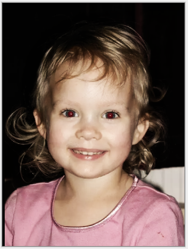
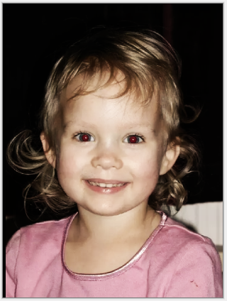
Blur:¶
The Blur submenu is made up of six blurring options: fragment, gaussian, motion, radial, unfocus, and zoom. These can be applied to the whole image or a selected area.
Fragment¶
To open Fragment blur go to Effects>Blur>Fragment

The Fragment Blur effect superimposes copies or “fragments” of the image or selected area. copies or "fragments" of the image are superimposed over the original. This blur can be useful when creating an unfocussed multi-viewed version of an image. The effect is not unlike modern interpretations of insect-like vision and could be used to fake "drunken" or "semi-conscious" vision. A dialogue box populates with three sliders for fragments, distance, and rotation.

The Fragments slider controls how many fragments appear. A higher value yields more fragments.
- Drag slider to the right to increase number of fragments
- Drag slider to the left to decrease number of fragments
The Distance slider controls how close or far fragments appear from one another. A higher value yields more distance between fragments.
- Drag slider to the right to increase distance
- Drag slider to the left to decrease distance
The Rotation circle slider controls the angle at which the fragments sit. It can be rotated 360 degrees.
Gaussian¶
To open Gaussian blur go to Effects>Blur>Gaussian

The Gaussian Blur effect applies a defocusing blur to the image or selected area. A dialogue box populates with one slider for radius.

The Radius slider controls how widely and how strongly the blur is applied. A higher value yields a stronger effect.
- Drag slider to the right to increase blur strength
- Drag slider to the left to decrease blur strength
Motion¶
To open Motion blur go to Effects>Blur>Motion

The Motion Blur effect creates the illusion of motion in an image or selected area. A dialogue box populates with two sliders, for angle and distance.

The Angle circle slider controls the angle at which the motion blur appears It can be rotated 360 degrees.
The Distance slider controls the width of the blur, how far the effect shifts the original pixels. A higher value yields a wider effect.
- Drag slider to the right to increase motion blur effect
- Drag slider to the left to decrease motion blur effect.
Radial¶
To open Radial blur go to Effects>Blur>Radial

The Radial Blur effect is like the motion blur, but rather than following a linear path, it follows a circular one. A dialogue box populates with configurable options for angle, offset, and quality.

The Angle circle slider controls the angle at which the blur appears It can be rotated 360 degrees.
The Center option box is used to configure where the effect will be interpreted from, setting the focus or center of the blur.
The Quality slider is used to define the quality of the blur. A higher value yields higher quality. It is recommended to use low quality for previews, small images, and small angles. High quality should be used for final quality, large images, and large angles.
- Drag slider to the right to increase quality
- Drag slider to the left to decrease quality
Unfocus¶
To open Unfocus blur go to Effects>Blur>Unfocus

The Unfocus Blur effect is like the Gaussian blur but yields a more dreamy or unfocused look to the image or selected area. A dialogue box populates with a slider for radius.

The Radius slider controls the strength of the effect. A higher value yields a stronger blur effect.
- Drag slider to the right to increase blur strength
- Drag slider to the left to decrease blur strength
Zoom¶
To open Zoom blur go to Effects>Blur>Zoom
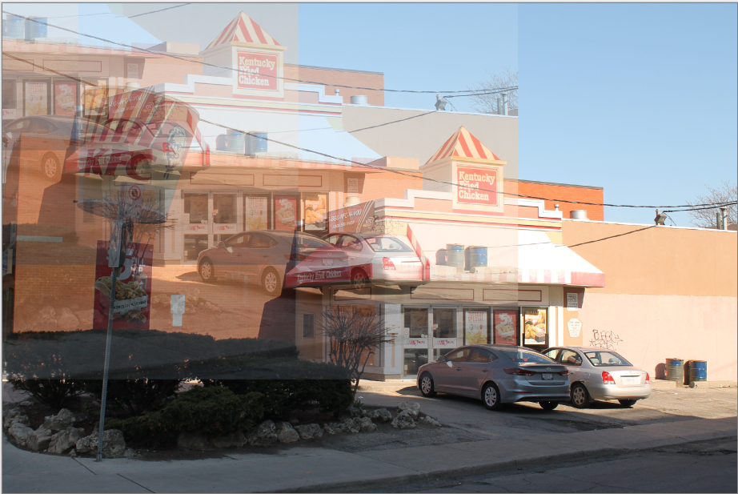
The Zoom Blur effect is used to give the appearance of motion towards the focal point of an image, as if the viewer were closing in on the focal point. It is like the Motion blur but applied outwards from a central point. A dialogue box populated with two configurable options, amount and offset.

The Amount slider controls how strong the blur appears. A higher value yields a stronger effect.
- Drag slider to the right to increase blur strength
- Drag slider to the left to decrease blur strength
The Offset option box is used to configure where the effect will be interpreted from, setting the focus or center of the blur.
Distort:¶
The Distort submenu is made up of six distortion options: bulge, frosted glass, pixelate, polar inversion, tile reflection, and twist. These can be applied to the whole image or a selected area.
Bulge¶
To open the Bulge effect go to Effects>Distort>Bulge
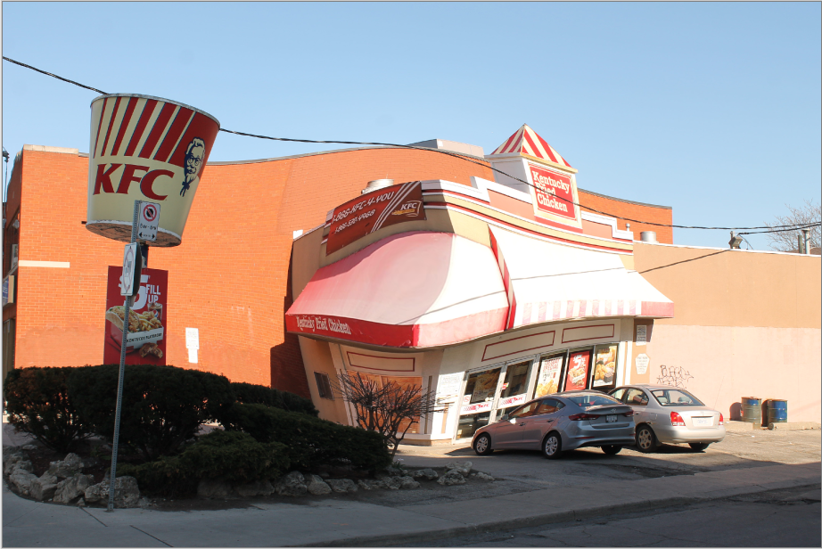
The Bulge effect makes the image or selected area swell or shrink, similar to a fisheye or reverse fisheye effect. A dialogue box populates with configurations for amount and offset.
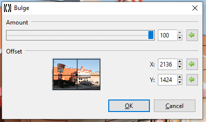
The Amount slider controls how strong the swelling or shrinking appears. A higher value yields a stronger effect.
- Drag slider to the right to increase swelling
- Drag slider to the left to decrease swelling
The Offset option box is used to configure where the effect will be interpreted from, setting the focus or center of the bulge.
Frosted Glass¶
To open the Frosted Glass effect go to Effects>Distort>Frosted Glass

The Frosted Glass effect makes the image or selected area look as though it were being viewed through frosted glass. A dialogue box will populate with an amount slider.
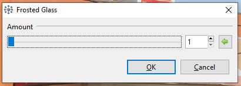
The Amount slider controls the harshness and number of displaced pixels giving off the frosted effect. A higher value yields a more frosted, pixelated look.
- Drag slider to the right to increase frosted appearance
- Drag slider to the left to decrease frosted appearance
Pixelate¶
To open the Pixelate effect go to Effects>Distort>Pixelate
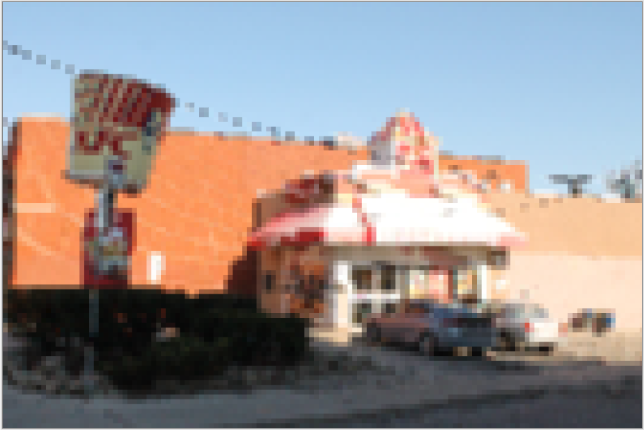
The Pixelate effect gives the image or selected area a pixelated look, reducing detail by enlarging regularly sampled pixels. A dialogue box populates with a slider for cell size.
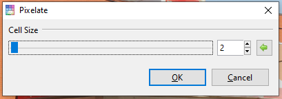
The Cell Size slider controls the size of the pixels. A higher value yields larger pixels, and lower values yield smaller, finer pixels.
- Drag slider to the right to increase pixel size
- Drag slider to the left to decrease pixel size
Polar Inversion¶
To open the Polar Inversion effect go to Effects>Distort>Polar Inversion

The Polar Inversion effect applies a transformation between Cartesian and Polar coordinate systems, resulting in a positional transformation which recursively wraps the image around itself in an endlessly repeating pattern. A dialogue box populates with multiple configurations.

The Amount slider controls the strength of the effect. A higher value yields a stronger inversion.
- Drag slider to the right to increase strength
- Drag slider to the left to decrease strength
The Offset option box is used to configure where the effect will be interpreted from, setting the focus or center of the inversion. The Edge Behavior dropdown selection defines how the effect behaves as the transformation reaches then exceeds the edge of the canvas.
Tile Reflection¶
To open the Tile Reflection effect go to Effects>Distort>Tile Reflection

The Tile Reflection effect makes the image or selection appear as if it were reflected in a wall of mirrored tiles. A dialogue box populates with configuration options for rotation, tile size, and intensity.

The Rotation circle slider controls the angle at which the tiles appear. It can be rotated 360 degrees.
The Tile Size slider controls how big or how small the tiles appear, they always remain square. A higher value yields larger tiles.
- Drag slider to the right to increase tile size
- Drag slider to the left to decrease tile size
The Intensity slider controls the curvature of each tile, determining how much of the surrounding are reflected in each tile. A higher value yields curvier tiles, making the image appear more abstracted.
- Drag slider to the right to increase tile curvature
- Drag slider to the left to decrease tile curvature
Twist¶
To open the Twist effect go to Effects>Distort>Bulge

The Twist effect mimics winding the image around the center point of the image. A dialogue box populates with two sliders for amount and antialias.

The Amount slider controls the intensity of the twist. Numbers closer to 0 make the effect less intense, with 0 leaving the image unaltered. The Antialias slider controls the amount of detail. A higher value yields a smoother appearance, while lower values yield a more jagged, pixelated appearance.
- Drag slider to the right to increase smoothness
- Drag slider to the left to decrease smoothness
Artistic Medium:¶
The Artistic Medium submenu is made up of Ink Sketch, Oil Painting, and Pencil Sketch, all mimicking traditional artistic mediums.
Ink Sketch¶
To open the Ink Sketch effect go to Effects>Artistic>Ink Sketch

The Ink Sketch effect makes the image appear as if it were drawn using a pen. A dialogue box populates with two sliders, ink outline and coloring.

The Ink Outline slider controls the weight of the outline or edging.
- Drag slider to the right to increase outline strength
- Drag slider to the left to decrease outline strength
The Coloring slider controls how much of the original image’s color bleeds through, higher values yield higher saturation.
- Drag slider to the right to increase color
- Drag slider to the left to decrease color
Oil Painting¶
To open the Oil Painting effect go to Effects>Artistic>Oil Painting

The Oil Painting effect makes the image appears as if it were painted with oil paints. A dialogue box populates with two sliders, brush size and coarseness.

The Brush Size slider controls the size of the paintbrush tip, larger values yield larger strokes and smaller values yield finer strokes.
- Drag slider to the right to increase brush size
- Drag slider to the left to decrease brush size
The Coarseness slider controls how much detail is captured in the transformation. A larger value yields a more detailed oil painting render and a smaller value yields a less detailed oil painting render.
- Drag slider to the right to increase detail
- Drag slider to the left to decrease detail
Pencil Sketch¶
To open the Pencil Sketch effect go to Effects>Artistic>Pencil Sketch

The Pencil Sketch effect makes the image appear as though it were sketched with a pencil. A dialogue box populates with two sliders, pencil tip and range.

The Pencil Tip slider controls the sharpness of the virtual pencil. A larger value yields a blunter tip, making lines thicker and heavier. A smaller value yields a sharper tip, making lines finer, and the image appear lighter.
- Drag slider to the right to increase line thickness
- Drag slider to the left to decrease line thickness
The Color Range slider has no effect on the image as it’s generated in greyscale. This slider is arbitrary and can be ignored.
Render:¶
The Render submenu is made up of Clouds, Julia Fractal, and Mandelbrot Fractal, these three effects create completely new renderings, replacing all color information in the active layer or selection.
Clouds¶
To open the Clouds effect go to Effects>Render>Clouds

The Clouds effect renders a randomized cloud pattern to the layer or desired selection. A dialogue box with two sliders, for scale and power, and a dropdown selection for blend mode will populate.

The Scale slider controls the size of clouds. Higher values yield larger clouds and lower values yield finer clouds.
- Drag slider to the right to increase cloud size
- Drag slider to the left to decrease cloud size
The Power slider controls how coarse or how fluffy the clouds appear, dealing with their texture. Higher values yield coarser, more detailed clouds and lower values yield softer, more blurred clouds.
- Drag slider to the right to increase cloud texture
- Drag slider to the left to decrease cloud texture
The Blend Mode dropdown menu lets you decide how the rendered clouds will be blended with the original image or layer.
| Name | Description |
|---|---|
| Normal | This is the default and standard blend mode. Each pixel in the layer is blended with the composition depending on its alpha value. |
| Multiply | Each pixel's RGB component intensity is multiplied with the pixel value from the composition. The result of this blend mode is always darker than the original. White pixels in the blend layer are effectively rendered transparent by the Multiply blend. |
| Additive | Each pixel's RGB component intensity is added to the intensity of the pixel values from the composition. The Additive blend has the effect of brightening pixels in the final composition. Black pixels in the blend layer are rendered as transparent by the Additive blend. |
| Color Burn | This blend mode has the effect of making dark pixels darker while lighter pixels must be blended with other light colored pixels in order to remain bright. |
| Color Dodge | This can be thought of as the opposite of Color Burn. Lighter pixels retain their brightness while darker pixels must be blended with other dark pixels in order to remain dark. |
| Reflect | This blend mode can be used for adding shiny objects or areas of light. Black pixels in the blend layer are ignored as if they were transparent. |
| Glow | This is the reverse of the Reflect mode: it works the same as swapping the layer positions and using Reflect. Glow effectively brightens the composition by the amount of brightness in the blend layer. Black pixels in the blend layer are rendered as if they were transparent. |
| Overlay | This is a combination of Screen and Multiply modes which uses the blend pixel intensity to determine the result. For darker colors, this acts like Multiply. For lighter colors, this acts like Screen. |
| Difference | The counterpart to Additive blending. The layer pixel's intensity is subtracted from the composition pixel's intensity resulting in darker colors. Subtraction could produce a negative intensity which is unable to be displayed, so an absolute value is returned. Thus, both "white minus black" and "black minus white" will both produce white. Difference blend is often useful when using the Clouds effect. |
| Negation | At first glance this seems similar to Difference, however it actually produces the opposite effect. Instead of making colors darker, it will make them brighter. |
| Lighten | The lightest pixel of either the blend layer or the composition is used. |
| Darken | The darkest pixel of either the blend layer or the composition is used. |
| Screen | This can be thought of as the opposite of the Multiply blend mode. It is used to make pixels brighter, with black being effectively transparent. |
| Xor | This is short for "exclusive OR", which is an advanced blending mode that is primarily used for image analysis. Pixels in the blend layer which exactly match the composition will be rendered black. Where differences exist, colors are shown. |
The Reseed button randomizes the cloud pattern.
The Coloring of the rendered clouds depends on the two colors selected in the color palette. To render clouds as a single color, lower the secondary color’s opacity to 0 in the color selection menu.
Julia Fractal¶
To open the Julia Fractal effect go to Effects>Render>Julia Fractal

The Julia Fractal effect renders a Julia Fractal on the layer or desired selection. A dialogue box with four sliders, for factor, quality, zoom, and angle will populate. The colors of this fractal are not configurable.

The Factor slider controls the color saturation. Higher values yield more vivid colors and lower values yield duller colors, with 1 rendering a greyscale fractal.
- Drag slider to the right to increase saturation
- Drag slider to the left to decrease saturation
The Quality slider controls the amount of detail in the fractal. Higher values yield a smoother, more detailed fractal and lower values yield a more jagged, “pixelated” fractal.
- Drag slider to the right to increase fractal detail
- Drag slider to the left to decrease fractal detail
The Zoom slider controls the scale, allowing you to zoom in or out.
- Drag slider to the right to zoom in
- Drag slider to the left to zoom out
The Angle circle slider controls the angle at which the fractal sits. It can be rotated 360 degrees.
Mandelbrot Fractal¶
To open the Mandelbrot Fractal effect go to Effects>Render>Mandelbrot Fractal

The Mandelbrot Fractal effect renders a Mandelbrot Fractal on the layer or desired selection. A dialogue box with four sliders, for factor, quality, zoom, and angle will populate.

The colors of this fractal are not configurable but can be inverted. Checking the ☑ Invert Colors checkbox has the same effect as applying Adjustments > Invert Colors.
The Factor slider controls the color saturation. Higher values yield more vivid colors and lower values yield duller colors, with 1 rendering a greyscale fractal.
- Drag slider to the right to increase saturation
- Drag slider to the left to decrease saturation
The Quality slider controls the amount of detail in the fractal. Higher values yield a smoother, more detailed fractal and lower values yield a more jagged, “pixelated” fractal.
- Drag slider to the right to increase fractal detail
- Drag slider to the left to decrease fractal detail
The Zoom slider controls the scale, allowing you to zoom in or out.
- Drag slider to the right to zoom in
- Drag slider to the left to zoom out
The Angle circle slider controls the angle at which the fractal sits. It can be rotated 360 degrees.
Stylize:¶
The Stylize menu is made up of four options: Edge Detect, Emboss, Outline, and Relief to change the image or selected area based on edge detection.
Edge Detect¶
To open the Edge Detect effect go to Effects>Stylize>Edge Detect

The Edge Detect effect highlights the edges of an image or selected area, creating an almost embossed effect. A dialogue box populates with a circle slider for the angle.

The Angle circle slider controls the angle at which the edges appear, controlling the direction of the light source. It can be rotated 360 degrees.
Emboss¶
To open the Emboss effect go to Effects>Stylize>Emboss
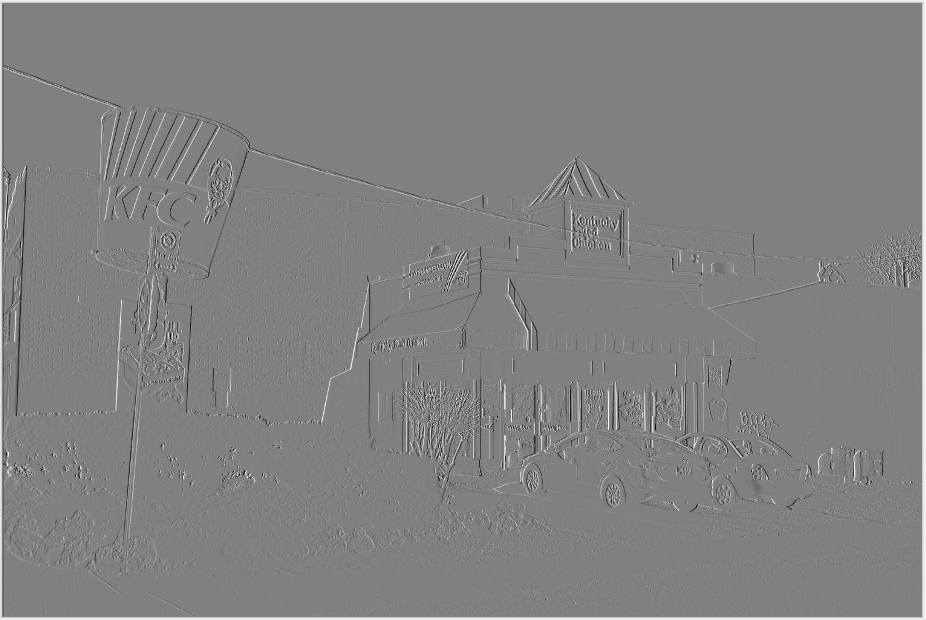
The Emboss effect is similar to the edge effect. It generates a black and white rendering of the image where the edges have been given a 3D highlight as though they were physically embossed. A dialogue box populates with a circle slider for the angle.

The Angle circle slider controls the angle at which the edges appear, controlling the direction of the light source. It can be rotated 360 degrees.
Outline¶
To open the Outline effect go to Effects>Stylize>Outline
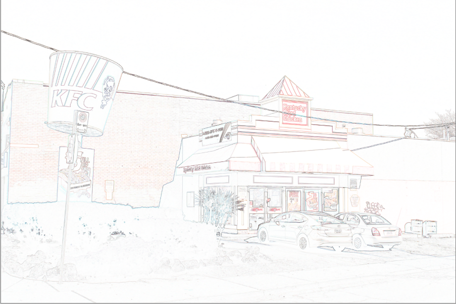
The Outline effect enhances edges found in an image by tracing around them with an outline of requested radius. A dialogue box populates with two sliders for thickness and intensity.

The Thickness slider controls how thick the outline appears. Higher values yield thicker outlines and lower values yield finer outline.
- Drag slider to the right to increase thickness
- Drag slider to the left to decrease thickness
The Intensity slider controls the strength of the effect, or the number of pixels that the effect is applied to. Higher values yield a stronger effect.
- Drag slider to the right to increase intensity
- Drag slider to the left to decrease intensity
Relief¶
To open the Relief effect go to Effects>Stylize>Relief

The Relief effect is similar to the edge detect effect, but instead it blends the raised edges back into the original image, giving it a full colored embossed look. A dialogue box populates with a circle slider for the angle.

The Angle circle slider controls the angle at which the edges appear, controlling the direction of the light source. It can be rotated 360 degrees.